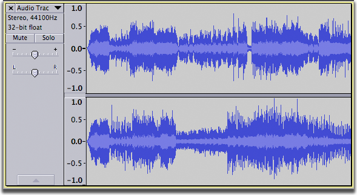

Splitting and Joining Stereo Tracks
From Audacity Manual
Using the commands in the Audio Track Dropdown Menu you can:
- Split a stereo track into separate tracks for left and right channels
- Split a stereo track into two separate mono tracks
- Join two mono, left or right tracks into one stereo track.
Splitting and Joining Tracks
Here is a stereo track:
- 
After choosing "Split Stereo Track" from the Track Dropdown Menu we get separate left-channel and right-channel tracks:
After choosing "Split Stereo to Mono" from the Track Dropdown Menu on the original stereo track we get two separate mono tracks:

Choosing "Make Stereo Track" from the Track Dropdown Menu of the upper track of a pair of mono, left or right channel tracks (in any combination) will combine those two tracks into one stereo track. The upper track will become the left channel of the stereo track and the lower track will become the right channel regardless of their current designation as mono, left or right. In the example below, two mono tracks are about to be combined into one stereo track. The result of this operation will be to re-create the stereo track as shown in the image above.
When joining two single-channel tracks into one stereo track be aware that:
Because of this, it is recommended that when you intend to join two single-channel tracks into one stereo track using Make Stereo Track, leave the gain and pan settings of the two tracks at 0 and do not apply an envelope to either track. If you wish to retain the gain, pan and envelope settings of the two mono tracks while joining them into one stereo track, select the two tracks then choose . |
Examples using the Track Dropdown Menu
Example 1: Applying equalization to one channel of a stereo track
Assume that you have a recording where one channel is "muffled" - lacking in high frequencies compared to the other channel.
- Choose Split Stereo Track.
- Select the muffled track, for example by clicking above Mute/Solo in the Track Control Panel.
- Choose and apply the appropriate equalization curve to the track.
- Listen to the result - if it is not as intended, choose and try a different equalization curve.
- When you are satisfied with the result, choose Make Stereo Track from the Track Dropdown Menu of the upper track.
Example 2: Reducing the "width" of a stereo track
Assume you have a recording of a drum kit where the stereo spread of the kit sounds unnatural. The high hat sounds like it's coming from the right speaker only and the floor tom from the left speaker.
- Choose Split Stereo to Mono, which makes mixes both tracks together equally in both left and right of your listening equipment.
- Adjust the pan control of the upper track to 70% left.
- Adjust the pan control of the lower track to 70% right.
- Listen to the result and adjust the pan controls until you get the effect you want.
- Select the two tracks, for example by clicking above Mute/Solo in the Track Control Panel of one track, then holding SHIFT and clicking similarly in the Track Control Panel of the other track.
- Choose so that the two tracks are mixed and rendered into one stereo track. This changes the audio data and waveform to match with the audible pan settings.
- If instead at step 6 you had chosen Make Stereo Track on the upper track, this does not render. The pan settings for the lower track would be changed to the 70% left of the upper track so it would sound incorrect, but the waveform would still show the lower channel as panned 70% right until you rendered. Exporting would render the unwanted changes to the exported file. Use then if you Make Stereo by mistake.